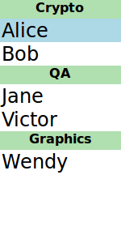
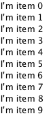

Models and Views in Qt Quick
Most applications need to format data and display the data. Qt Quick has the notion of models, views, and delegates to display data. They modularize the visualization of data in order to give the developer or designer control over the different aspects of the data. A developer can swap a list view with a grid view with little changes to the data. Similarly, encapsulating an instance of the data in a delegate allows the developer to dictate how to present or handle the data.

- Model - contains the data and its structure. There are several QML types for creating models.
- View - a container that displays the data. The view might display the data in a list or a grid.
- Delegate - dictates how the data should appear in the view. The delegate takes each unit of data in the model and encapsulates it. The data is accessible through the delegate. The delegate can also write data back into editable models (e.g. in a TextField's onAccepted Handler).
To visualize data, bind the view's model property to a model and the delegate property to a component or another compatible type.
Displaying Data with Views
Views are containers for collections of items. They are feature-rich and can be customizable to meet style or behavior requirements.
A set of standard views are provided in the basic set of Qt Quick graphical types:
- ListView - arranges items in a horizontal or vertical list
- GridView - arranges items in a grid within the available space
- PathView - arranges items on a path
- TableView - arranges data from a QAbstractTableModel in a table
- TreeView - arranges data from a QAbstractItemModel in a tree
These types have properties and behaviors exclusive to each type. Visit their respective documentation for more information.
In addition, Qt Quick Controls contains some extra views and delegates that are styled according to the application style, for example HorizontalHeaderView and VerticalHeaderView.
Decorating Views
Views allow visual customization through decoration properties such as the header, footer, and section properties. By binding an object, usually another visual object, to these properties, the views are decoratable. A footer may include a Rectangle type showing borders or a header that displays a logo on top of the list.
Suppose that a specific club wants to decorate its members list with its brand colors. A member list is in a model and the delegate will display the model's content.
ListModel { id: nameModel ListElement { name: "Alice" } ListElement { name: "Bob" } ListElement { name: "Jane" } ListElement { name: "Harry" } ListElement { name: "Wendy" } } Component { id: nameDelegate Text { required property string name text: name font.pixelSize: 24 } }
The club may decorate the members list by binding visual objects to the header and footer properties. The visual object may be defined inline, in another file, or in a Component type.
ListView { anchors.fill: parent clip: true model: nameModel delegate: nameDelegate header: bannercomponent footer: Rectangle { width: parent.width; height: 30; gradient: clubcolors } highlight: Rectangle { width: parent.width color: "lightgray" } } Component { //instantiated when header is processed id: bannercomponent Rectangle { id: banner width: parent.width; height: 50 gradient: clubcolors border {color: "#9EDDF2"; width: 2} Text { anchors.centerIn: parent text: "Club Members" font.pixelSize: 32 } } } Gradient { id: clubcolors GradientStop { position: 0.0; color: "#8EE2FE"} GradientStop { position: 0.66; color: "#7ED2EE"} }
Mouse and Touch Handling
The views handle dragging and flicking of their content, however they do not handle touch interaction with the individual delegates. In order for the delegates to react to touch input, e.g. to set the currentIndex, a MouseArea with the appropriate touch handling logic must be provided by the delegate.
Note that if highlightRangeMode is set to StrictlyEnforceRange the currentIndex will be affected by dragging/flicking the view, since the view will always ensure that the currentIndex is within the highlight range specified.
ListView Sections
ListView contents may be grouped into sections, where related list items are labeled according to their sections. Further, the sections may be decorated with delegates.
A list may contain a list indicating people's names and the team on which team the person belongs.
ListModel { id: nameModel ListElement { name: "Alice"; team: "Crypto" } ListElement { name: "Bob"; team: "Crypto" } ListElement { name: "Jane"; team: "QA" } ListElement { name: "Victor"; team: "QA" } ListElement { name: "Wendy"; team: "Graphics" } } Component { id: nameDelegate Text { text: name; font.pixelSize: 24 anchors.left: parent.left anchors.leftMargin: 2 } }
The ListView type has the section attached property that can combine adjacent and related types into a section. The section.property determines which list type property to use as sections. The section.criteria can dictate how the section names are displayed and the section.delegate is similar to the views' delegate property.
ListView { anchors.fill: parent model: nameModel delegate: nameDelegate focus: true highlight: Rectangle { color: "lightblue" width: parent.width } section { property: "team" criteria: ViewSection.FullString delegate: Rectangle { color: "#b0dfb0" width: parent.width height: childrenRect.height + 4 Text { anchors.horizontalCenter: parent.horizontalCenter font.pixelSize: 16 font.bold: true text: section } } } }

View Delegates
Views need a delegate to visually represent an item in a list. A view will visualize each item list according to the template defined by the delegate. Items in a model are accessible through the index property as well as the item's properties.
Component { id: petdelegate Text { id: label font.pixelSize: 24 text: index === 0 ? type + " (default)" : type required property int index required property string type } }

Accessing Views and Models from Delegates
The list view to which the delegate is bound is accessible from the delegate through the ListView.view property. Likewise, the GridView GridView.view is available to delegates. The corresponding model and its properties, therefore, are available through ListView.view.model. In addition, any defined signals or methods in the model are also accessible.
This mechanism is useful when you want to use the same delegate for a number of views, for example, but you want decorations or other features to be different for each view, and you would like these different settings to be properties of each of the views. Similarly, it might be of interest to access or show some properties of the model.
In the following example, the delegate shows the property language of the model, and the color of one of the fields depends on the property fruit_color of the view.
Rectangle { width: 200; height: 200 ListModel { id: fruitModel property string language: "en" ListElement { name: "Apple" cost: 2.45 } ListElement { name: "Orange" cost: 3.25 } ListElement { name: "Banana" cost: 1.95 } } Component { id: fruitDelegate Row { id: fruit Text { text: " Fruit: " + name; color: fruit.ListView.view.fruit_color } Text { text: " Cost: $" + cost } Text { text: " Language: " + fruit.ListView.view.model.language } } } ListView { property color fruit_color: "green" model: fruitModel delegate: fruitDelegate anchors.fill: parent } }
Models
Data is provided to the delegate via named data roles which the delegate may bind to. Here is a ListModel with two roles, type and age, and a ListView with a delegate that binds to these roles to display their values:
import QtQuick Item { width: 200 height: 250 ListModel { id: myModel ListElement { type: "Dog"; age: 8; noise: "meow" } ListElement { type: "Cat"; age: 5; noise: "woof" } } component MyDelegate : Text { required property string type required property int age text: type + ", " + age // WRONG: Component.onCompleted: () => console.log(noise) // The above line would cause a ReferenceError // as there is no required property noise, // and the presence of the required properties prevents // noise from being injected into the scope } ListView { anchors.fill: parent model: myModel delegate: MyDelegate {} } }
In most cases you should use required properties to pass model data into your delegates. If a delegate contains required properties, the QML engine will check if the name of a required property matches that of a model role. If so, that property will be bound to the corresponding value from the model.
In rare corner cases, you may want to transfer the model properties through the QML context rather than as required properties. If no required properties are present in your delegate, the named roles are provided as context properties:
import QtQuick Item { width: 200; height: 250 ListModel { id: myModel ListElement { type: "Dog"; age: 8 } ListElement { type: "Cat"; age: 5 } } Component { id: myDelegate Text { text: type + ", " + age } } ListView { anchors.fill: parent model: myModel delegate: myDelegate } }
Context properties are invisible to tooling and prevent the Qt Quick Compiler from optimizing your code. They make it harder to reason about the specific data your delegate expects. There is no way to explicitly populate the QML context from QML. If your component expects data to be passed via the QML context, you can only use it in places where the right context is made available via native means. This can be your own C++ code or the specific implementations of surrounding elements. Conversely, required properties can be set in a number of ways from QML or via native means. Therefore, passing data via the QML context reduces the re-usability of your components.
If there is a naming clash between the model's properties and the delegate's properties, the roles can be accessed with the qualified model name instead. For example, if a Text type had (non-required) type or age properties, the text in the above example would display those property values instead of the type and age values from the model item. In this case, the properties could have been referenced as model.type and model.age instead to ensure the delegate displays the property values from the model item. For this to work, you need to require a model property in your delegate (unless you are using context properties).
A special index role containing the index of the item in the model is also available to the delegate. Note this index is set to -1 if the item is removed from the model. If you bind to the index role, be sure that the logic accounts for the possibility of index being -1, i.e. that the item is no longer valid. (Usually the item will shortly be destroyed, but it is possible to delay delegate destruction in some views via a delayRemove attached property.)
Remember that you can use integers or arrays as model:
Repeater { model: 5 Text { required property int modelData text: modelData } }
Repeater { model: ["one", "two", "three"] Text { required property string modelData text: modelData } }
Such models provide a singular, anonymous piece of data to each instance of the delegate. Accessing this piece of data is the primary reason to use modelData, but other models also provide modelData.
The object provided via the model role has a property with an empty name. This anonymous property holds the modelData. Furthermore, the object provided via the model role has another property called modelData. This property is deprecated and also holds the modelData.
In addition to the model role, a modelData role is provided. The modelData role holds the same data as the modelData property and the anonymous property of the object provided via the model role.
The differences between the model role and the various means to access modelData are as follows:
- Models that do not have named roles (such as integers or an array of strings) have their data provided via the modelData role. The modelData role does not necessarily contain an object in this case. In the case of an integer model it would contain an integer (the index of the current model item). In the case of an array of strings it would contain a string. The model role still contains an object, but without any properties for named roles. model still contains its usual modelData and anonymous properties, though.
- If the model has only one named role, the modelData role contains the same data as the named role. It is not necessarily an object and it does not contain the named role as a named property the way it usually would. The model role still contains an object with the named role as property, and the modelData and anonymous properties in this case.
- For models with multiple roles, the modelData role is only provided as a required property, not as a context property. This is due to backwards compatibility with older versions of Qt.
The anonymous property on model allows you to cleanly write delegates that receive both their model data and the role name they should react to as properties from the outside. You can provide a model without or with only one named role, and an empty string as role. Then, a binding that simply accesses model[role] will do what you expect. You don't have to add special code for this case.
Note: The model, index, and modelData roles are not accessible if the delegate contains required properties, unless it has also required properties with matching names.
QML provides several types of data models among the built-in set of QML types. In addition, models can be created with Qt C++ and then made available to QQmlEngine for use by QML components. For information about creating these models, visit the Using C++ Models with Qt Quick Views and creating QML types articles.
Positioning of items from a model can be achieved using a Repeater.
List Model
ListModel is a simple hierarchy of types specified in QML. The available roles are specified by the ListElement properties.
ListModel { id: fruitModel ListElement { name: "Apple" cost: 2.45 } ListElement { name: "Orange" cost: 3.25 } ListElement { name: "Banana" cost: 1.95 } }
The above model has two roles, name and cost. These can be bound to by a ListView delegate, for example:
ListView { anchors.fill: parent model: fruitModel delegate: Row { id: delegate required property string name required property real cost Text { text: "Fruit: " + delegate.name } Text { text: "Cost: $" + delegate.cost } } }
ListModel provides methods to manipulate the ListModel directly via JavaScript. In this case, the first item inserted determines the roles available to any views that are using the model. For example, if an empty ListModel is created and populated via JavaScript, the roles provided by the first insertion are the only roles that will be shown in the view:
ListModel { id: fruitModel } ... MouseArea { anchors.fill: parent onClicked: fruitModel.append({"cost": 5.95, "name":"Pizza"}) }
When the MouseArea is clicked, fruitModel will have two roles, cost and name. Even if subsequent roles are added, only the first two will be handled by views using the model. To reset the roles available in the model, call ListModel::clear().
XML Model
XmlListModel allows construction of a model from an XML data source. The roles are specified via the XmlListModelRole type. The type needs to be imported.
import QtQml.XmlListModel
The following model has three roles, title, link and pubDate:
XmlListModel { id: feedModel source: "http://rss.news.yahoo.com/rss/oceania" query: "/rss/channel/item" XmlListModelRole { name: "title"; elementName: "title" } XmlListModelRole { name: "link"; elementName: "link" } XmlListModelRole { name: "pubDate"; elementName: "pubDate" } }
The query property specifies that the XmlListModel generates a model item for each <item> in the XML document.
The RSS News demo shows how XmlListModel can be used to display an RSS feed.
Object Model
ObjectModel contains the visual items to be used in a view. When an ObjectModel is used in a view, the view does not require a delegate because the ObjectModel already contains the visual delegate (items).
The example below places three colored rectangles in a ListView.
import QtQuick 2.0 import QtQml.Models 2.1 Rectangle { ObjectModel { id: itemModel Rectangle { height: 30; width: 80; color: "red" } Rectangle { height: 30; width: 80; color: "green" } Rectangle { height: 30; width: 80; color: "blue" } } ListView { anchors.fill: parent model: itemModel } }
Integers as Models
An integer can be used as a model that contains a certain number of types. In this case, the model does not have any data roles.
The following example creates a ListView with five elements:
Item { width: 200; height: 250 Component { id: itemDelegate Text { required property int index text: "I am item number: " + index } } ListView { anchors.fill: parent model: 5 delegate: itemDelegate } }
Note: The limit on the number of items in an integer model is 100,000,000.
Object Instances as Models
An object instance can be used to specify a model with a single object type. The properties of the object are provided as roles.
The example below creates a list with one item, showing the color of the myText text. Note the use of the fully qualified model.color property to avoid clashing with color property of the Text type in the delegate.
Rectangle { width: 200; height: 250 Text { id: myText text: "Hello" color: "#dd44ee" } Component { id: myDelegate Text { required property var model text: model.color } } ListView { anchors.fill: parent anchors.topMargin: 30 model: myText delegate: myDelegate } }
C++ Data Models
Models can be defined in C++ and then made available to QML. This mechanism is useful for exposing existing C++ data models or otherwise complex datasets to QML.
For information, visit the Using C++ Models with Qt Quick Views article.
Array models
You can use JavaScript arrays and various kinds of QML lists as models. The elements of the list will be made available as model and modelData by the rules outlined above: Singular data like integers or strings are made available as singular modelData. Structured data like JavaScript objects or QObjects are made available as structured model and modelData.
The individual model roles are also made available if you request them as required properties. Since we cannot know in advance what objects will appear in an array, any required property in a delegate will be populated, possibly with a coercion of undefined to the required type. The individual model roles are not made available via the QML context, though. They would shadow all other context properties.
Repeaters

Repeaters create items from a template for use with positioners, using data from a model. Combining repeaters and positioners is an easy way to lay out lots of items. A Repeater item is placed inside a positioner, and generates items that the enclosing positioner arranges.
Each Repeater creates a number of items by combining each element of data from a model, specified using the model property, with the template item, defined as a child item within the Repeater. The total number of items is determined by the amount of data in the model.
The following example shows a repeater used with a Grid item to arrange a set of Rectangle items. The Repeater item creates a series of 24 rectangles for the Grid item to position in a 5 by 5 arrangement.
import QtQuick Rectangle { width: 400; height: 400; color: "black" Grid { x: 5; y: 5 rows: 5; columns: 5; spacing: 10 Repeater { model: 24 Rectangle { width: 70; height: 70 color: "lightgreen" Text { text: index font.pointSize: 30 anchors.centerIn: parent } } } } }
The number of items created by a Repeater is held by its count property. It is not possible to set this property to determine the number of items to be created. Instead, as in the above example, we use an integer as the model.
For more details, see the QML Data Models document.
If the model is a string list, the delegate is also exposed to the usual read-only modelData property that holds the string. For example:
Column { Repeater { model: ["apples", "oranges", "pears"] Text { required property string modelData text: "Data: " + modelData } } } |
|

It is also possible to use a delegate as the template for the items created by a Repeater. This is specified using the delegate property.
Changing Model Data
To change model data, you can assign updated values to the model properties. The QML ListModel is editable by default whereas C++ models must implement setData() to become editable. Integer and JavaScript array models are read-only.
Supposed a QAbstractItemModel based C++ model that implements the setData method is registered as a QML type named EditableModel. Data could then be written to the model like this:
ListView { anchors.fill: parent model: EditableModel {} delegate: TextEdit { required property var model width: ListView.view.width height: 30 text: model.edit Keys.onReturnPressed: model.edit = text } }
Note: The edit role is equal to Qt::EditRole. See roleNames() for the built-in role names. However, real life models would usually register custom roles.
Note: If a model role is bound to a required property, assigning to that property will not modify the model. It will instead break the binding to the model (just like assigning to any other property breaks existing bindings). If you want to use required properties and change the model data, make model also a required property and assign to model.propertyName.
For more information, visit the Using C++ Models with Qt Quick Views article.
Using Transitions
Transitions can be used to animate items that are added to, moved within, or removed from a positioner.
Transitions for adding items apply to items that are created as part of a positioner, as well as those that are reparented to become children of a positioner.
Transitions for removing items apply to items within a positioner that are deleted, as well as those that are removed from a positioner and given new parents in a document.
Note: Changing the opacity of items to zero will not cause them to disappear from the positioner. They can be removed and re-added by changing the visible property.